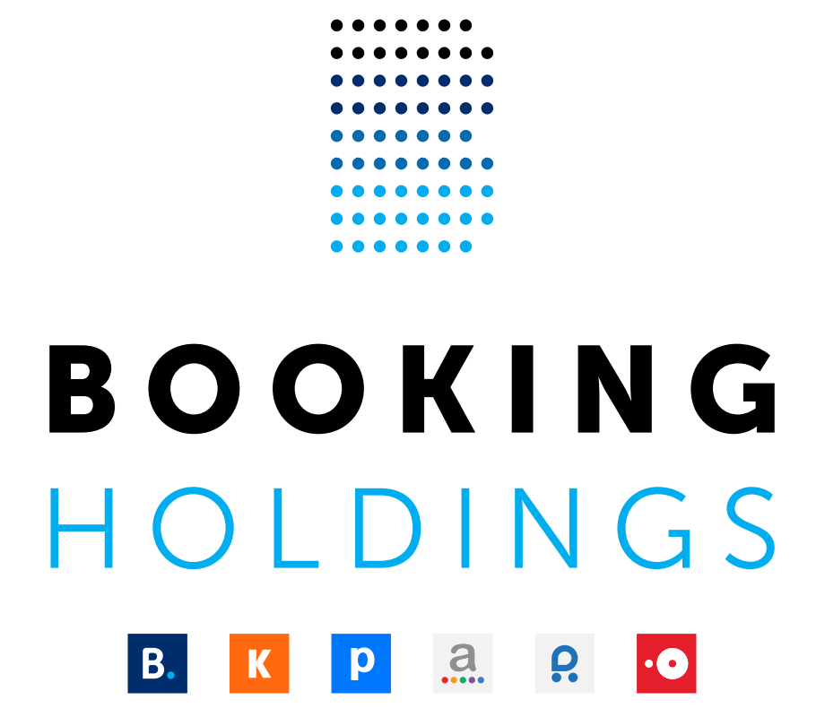

부킹 홀딩스 Booking Holdings
부킹 홀딩스(Booking Holdings)는 여행 요금 비교·검색과 예약 서비스를 제공하는 미국 여행 기술 기업이다. 여러 여행 예약 및 메타검색 웹사이트를 소유하고 운영한다.
최종 업데이트

부킹 홀딩스는 어떤 브랜드인가
이 회사는 미국 노워크에 기반을 두고 여행 예약과 요금 검색 서비스를 운영한다. 주요 웹사이트는 Booking.com, Priceline.com, Agoda, Kayak, Cheapflights, Rentalcars.com, Momondo, OpenTable이다.
웹사이트는 약 40개 언어와 200개 국가를 대상으로 운영한다. 수익은 주로 예약 중개 수수료에서 얻으며 일부는 광고에서 창출한다.
미국 기업을 매출 기준으로 평가하는 Fortune 500에서 243위를 기록했다. 2023년 이용자는 산하 웹사이트를 통해 1.235 billion 객실 숙박일, 88 million 렌터카 이용일, 68 million 항공권을 예약했다.
부킹 홀딩스는 어떻게 시작되고 성장했나
회사의 설립 연도는 1997년이며 창업자는 Jay S. Walker이다.
이에 앞서 Walker는 1996년 코네티컷주 스탬퍼드에서 Priceline.com Incorporated를 설립하고 이용자가 가격을 제시하는 온라인 여행 사이트 Priceline.com을 출범했다. 회사는 1999년 기업공개를 실시했으며 당시 Walker의 지분은 35%였다.
2004년 ActiveHotels.com을 $161 million에 인수했고 2005년 Booking.com을 $133 million에 인수해 두 회사를 통합했다. 2014년 The Priceline Group Inc.로 사명을 변경한 뒤 2018년 현재 사명과 나스닥 종목 코드 BKNG를 채택했다.
부킹 홀딩스의 브랜드 아이덴티티는 무엇인가
여행 예약 사이트와 메타검색 서비스를 여러 브랜드로 함께 운영하며 숙박, 항공권, 렌터카, 음식점 예약을 연결한다.
부킹 홀딩스의 대표 제품과 서비스는 무엇인가
대표 서비스인 Booking.com을 비롯해 Priceline.com과 Agoda가 숙박을 포함한 여행 예약을 제공한다. Kayak, Cheapflights, Momondo는 여행 요금을 탐색하고 비교하는 메타검색 사업을 구성한다.
Rentalcars.com은 렌터카 예약을 담당하며 OpenTable은 음식점 예약 서비스를 제공한다. 회사는 과거 식료품, 휘발유, 주택담보대출, 자동차 판매도 시험했지만 해당 사업은 2000년 중단했다.
현재 사업은 여행 예약과 요금 검색 웹사이트에서 발생하는 중개 수수료를 중심으로 구성한다.
부킹 홀딩스는 지금 어떤 상태인가
회사는 나스닥에서 BKNG 종목 코드로 거래하며 2017년 Glenn D. Fogel을 최고경영자 겸 사장으로 임명했다.
Kayak은 2017년 브라질 메타검색 기업 Mundi의 자산을 인수했다. 회사는 2021년 GoToGate 인수를 제안했지만 유럽 규제 당국은 2023년 해당 거래를 차단했다.
부킹 홀딩스 로고는 어떻게 변해왔나
자주 묻는 질문
부킹 홀딩스는 어느 나라 브랜드인가요?
부킹 홀딩스는 미국의 여행·호스피탈리티 브랜드입니다.
부킹 홀딩스는 언제 설립되었나요?
부킹 홀딩스는 1997년 설립되었습니다.
부킹 홀딩스의 브랜드 아이덴티티는 무엇인가요?
여행 예약 사이트와 메타검색 서비스를 여러 브랜드로 함께 운영하며 숙박, 항공권, 렌터카, 음식점 예약을 연결한다.
부킹 홀딩스의 대표 제품은 무엇인가요?
대표 서비스인 Booking.com을 비롯해 Priceline.com과 Agoda가 숙박을 포함한 여행 예약을 제공한다.
부킹 홀딩스는 현재 어떤 상태인가요?
회사는 나스닥에서 BKNG 종목 코드로 거래하며 2017년 Glenn D.
부킹 홀딩스의 창업자는 누구인가요?
부킹 홀딩스의 창업자는 Jay S. Walker입니다(위키데이터 기준).
부킹 홀딩스의 본사는 어디에 있나요?
부킹 홀딩스의 본사는 노워크에 있습니다(위키데이터 기준).
출처와 검증
부킹 홀딩스 관련 참고: 공식 웹사이트 · 위키데이터 Q18674747 · 한국어 위키백과 · 영어 위키백과. 브랜드명은 한글과 원어를 함께 표기하되 데이터에 없는 표기는 만들지 않습니다. 기원 국가·설립연도는 검수된 정의문에서 확인된 값을 우선하고, 없을 때만 공식 웹사이트 URL이 일치하는 위키데이터 개체의 값을 씁니다. 위키데이터 값은 2026-09-12 기준입니다.